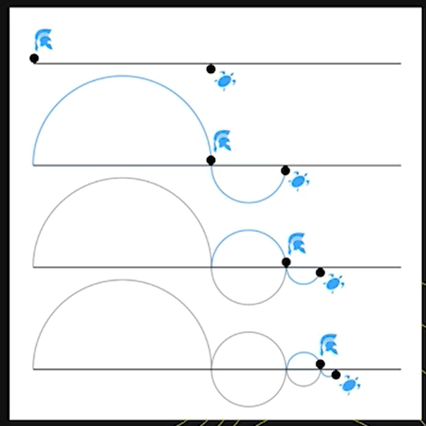
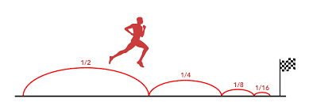

A prominent philosopher who was basically the first to talk about the atom. He believed it to be an indivisible particle, which the entire universe consists of. That was long before science discovered it. In his attitude, Democritus held the natural paramount over the divine. Democritus denied the existence of gods and the role of the supernatural in the creation of the world.
His worldview is also of immense interest to us. He claimed that there are two modes of relations: love and hate, eros and thanatos. Thanatos, or destructive force, is primordial. Eros, namely love, is the force that breathes life into the world created from four elements (earth, water, fire, and air). The cosmos, said Empedocles, is brought into existence by love. Love was seen as a uniting power and productive power, the power of unity. And we see this unity in Empedocles' ideas. Love, according to Empedocles, is not a feeling of a particular person towards another. It's a primordial sensuality of the world. Love is the passion of the universe, the passion of nature. - Love created the world. - Love is not a private thing, since it lies in the structure of the universe itself. - Love is a powerful force that penetrates the cosmos. Thanks to it, everything lives and protects itself from destruction.
Pythagorean School was one of the most powerful and recognized. Pythagoras said that everything is number, rhythm, harmony, and measure. Everything in the world is harmonious and resulted from a need. Pythagoras gave us the term "philosophy". He said that only God was wise. God has the full knowledge, and philosophy is just a kind of activity through which the desire or love for wisdom is expressed, not wisdom itself. We should keep in mind that philosophy does not know. It only strives for knowledge. Here lies the difference between a philosopher and a wiseacre. Back to everyday life, suppose you know a wise man who you come to for answers. They offer you these answers like psychologists do. A real philosopher is a person who refuses to give you any answers but seeks to urge you to think on your own instead. And you start to question this world and strive for knowledge. At the same time, it is hard to achieve that knowledge. You always feel a lack of it and continue to ask questions. Essentially, obtaining philosophical knowledge is a never-ending process.
He is also fundamentally important. This philosopher had a huge impact on culture, on Heidegger, who presented him as the creator of the paradigm of European thought. Parmenides is the author of a significant idea, which I would like to start with:
Parmenides said that the universe never originated from some particular entity. No one created it. It just exists. It is complete as it is, and there is no potential world outside of it, from which we could add something to our reality. Why is it so important? Remember, the cosmos in ancient Greece was deemed proportional, harmonious, and whole. If we suppose that the universe had some empty space, from which something could be created or moved, we conclude that this harmony could be violated. You see, by saying "whatever is is, and whatever is not cannot be," we refute the concept of emptiness, that appeared in the culture of the 19th and 20th centuries. Parmenides introduced this idea of the visibility of everything. He extolled the form. If we see it, if we contemplate it, we conclude, it exists. There is nothing else. There is only what we can see.
Do you remember the importance of publicity in Greece, the importance of the word in the formation of an idea? A thought only exists after it has been expressed. The world only exists as a being. There is no non-being. Otherwise, it breaks that visibility because something hidden appears. It breaks the harmony and proportionality of the world. Interestingly, as some see it, the culture of Japan is a culture of silence. It is why there is so much emptiness in it, from which something appears. And European culture involves what might be called an absolute of existence, that does not imply any absence. This is why death is not an end, which is an obvious conclusion of this reasoning. The idea of nothingness emerged in the 19th century. It stirred people's minds immensely: because we are so much afraid of it. No one ever created the universe. It just exists. It's primordial. And it is real.
I would like to offer you an illustrative poem by Joseph Brodsky to show you how these ancient thoughts were born and how they continue to exist in people's minds and art. Let me recite it:
"I loved you. Love still (it is possible
that just pain) drills my brains.
The whole thing is shattered into the devil's smithereens.
I tried shooting myself, but it's so complicated
with the weapons. And furthermore, the temples:
which one to whack? What spoiled it was not the
trembling, but
pensiveness. Hell, what a mess! I loved you so strongly, so hopelessly,
as God grant to you by others - but He won't!
He, being of many capabilities,
will not create - according to Parmenides - twice."
this fever in my blood, [this] broad-boned crackling
[such] that the fillings would melt in my jaws [muzzle] out
of the desire [thirst]
to touch - "[your] bust" I delete - [your] lips
According to Parmenides, the world was not created twice. The world was created as it is. Brodsky elegantly complements his poem with Parmenides' quotes.
There was a student of Parmenides, Zeno. He invented several paradoxes. His most famous paradox is about Achilles and the tortoise.
Let us assume that Achilles runs 10 times faster than a tortoise, and he is a thousand steps behind it. During the time that Achilles will need to overcome that distance, the tortoise will already have taken a hundred steps. By the time Achilles takes these hundred steps, the tortoise will have taken ten more, and so on. So, the paradox is that no matter how fast Achilles moves, he will never catch up with it. Zeno is known for some other paradoxes.
The paradox of cutting in two. To overcome a path, one has to pass half of his path, and then the half of the remaining path, and so on.
These tasks caused serious disputes among theoretical mathematicians even in the 20th century.
So, this is natural, pre-Socratic philosophy. Why is it called pre-Socratic? Because Socrates was a figure who revolutionized philosophy. Let's continue with Socrates who introduced a significant change in the worldview and philosophy of ancient Greece.
We have very little information about him. Moreover, he never wrote anything. All we know is what other sources said about him. So, it is known that Socrates came to people and asked them questions. He talked to them, as he was convinced that ideas are born in a discussion and truth reveals itself in a dialogue. And that philosophizing provoked answers. He usually asked people something like, "What is honor?", "What is justice?" Socrates used different questions and answers to lead a person to give another definition of justice or honor, which was completely different from the one they gave at first. Of course, it made them angry and confused. This way, Socrates made many enemies and ended up in court.
Socrates did what one may call an anthropological turn. Socrates was not really interested in nature, the matter every other philosopher before him had dwelled upon. What aroused his curiosity was the very human being. Socrates was enthusiastic about learning the way humans cognize the world, what a human is, what language is, and truth.
Socrates couldn't find any guiding principles of cognition, any method of gaining knowledge. So, he created the method of dialogue. He enjoyed it when a new idea appeared in a dialogue, in an interaction. This method of cognition is called Maieutics. It is a metaphor for "midwife," a woman assisting in child delivery. In fact, Socrates thought himself to be a midwife of ideas. By the use of questions and answers, he tried to bring the thought of another person to light. He did not articulate it, he wanted it to be born in a discussion, in the moment of dialogue.
He taught people a very important thing, which, however, was considered heretical. He was convicted for it, namely, for teaching people to ask questions. Where there is a question, there is a doubt. Where there is a doubt, there is a risk of straying away from ideology, common doctrines. Therefore, that was politically undesirable activity. The government was displeased with people asking questions and doubting things. And Socrates encouraged people to do just that. Socrates taught people to ask questions, to search for the truth.
Two sayings are usually associated with him:
Let us analyze them. "I know that I know nothing" means that I understand the extent of my lack of knowledge. I do not stick to a mythological way of thinking that knows the answers. The postulate of mythological thinking was "I accept the knowledge that is given to me". Socrates, however, considered himself unknowing yet willing to know and striving for wisdom. In that sense, Socrates started that search for the truth about man, the world, and its origins.
Socrates is like a midwife that helps to give birth to ideas. This art was called Maieutics. Only a woman that could not give birth anymore could become a midwife. In the same way, Socrates was not able to give birth to "knowledge," because he did not "know" anything. This is why he helped others.
Let's talk about his death. Well, Socrates was imprisoned for causing turmoil among youth. He was sentenced to death. As a citizen, he couldn't be killed, which is why he had to drink poison. His friends and students tried to dissuade him, but it was unimaginable for a true citizen to be on the run. So, he was ready to face his destiny. The realization of his destiny turned his death into a social ideal, which immortalized him in a way. This story later appeared in classical art. There was, of course, pathos[1] in Socrates' act. It was an act of voluntary suicide, which showed his dignity. Of course, he is a true titan of ancient Greek thought. Socrates and Aristotle belong to two successive generations.
Plato was Socrates's disciple who wrote down what Socrates said. Plato is one of the first philosophers whose treatises were preserved at least partially. There were only pieces, little fragments of the works left from those before him. In the case of Plato, most of his writings, not the full heritage, survived to the present. Those pieces sparkle with brightness and express the fullness of his thought. We could enjoy reading his predecessors' works, but unfortunately, they had been eventually lost.
Let's talk about Plato's philosophy in particular. Plato's Academy was the first to start teaching philosophy as a profession of some sort. By the way, let me add that there are no good textbooks on philosophy. Philosophy can only be understood through original texts because any attempt to retell a text is an interpretation of it. It is why texts lose their meaning. It is important to study philosophy using original sources. So, in these textbooks, you can find Plato's world of ideas and things.
It is an absolutely Christianized idea that there are two worlds. Plato did not differentiate between the worlds. According to him, there is one whole world. This scheme is not really elegant. But it provides an insight into Plato's ontological order of things, a structure of being from Plato's perspective. So, Plato said that there is a world of ordinary perceivable things. There, at the very end, is the material world. The very nature of it constitutes a sensual realization of certain whole eide or Ideas. An eidos[2] is something ideal. Eidos is, in a way, a scheme of a chair. For example, we have a great many separate chairs. And we have a chair as it is. All these chairs refer to this initial scheme of a chair, which is an eidos, an idea. According to Plato, there is the sensory sphere containing all sorts of objects. Also, there are people. Well, further, we find the eide of objects, knowledge, and so on. The eidos of our soul is an immortal, indestructible element. It knows everything and has the fullest knowledge. The problem is that when an eidos enters a real body, it drinks from the river of oblivion[3] (mythologically, according to Plato). This is why it loses its knowledge. Thus, according to Plato, cognition is remembrance in its essence. We remember what already exists within our eide. So, all these eide are connected with a single idea of the good, which lights the path and is the source of all ideas. To sum up, there are separate material objects. There are eide, schemes of objects, if you like, there are also the souls of people. There is a common idea of the good, a certain final point, and a starting point of the whole world. So, everything emanates from one single source. In the scheme, you can also get an idea of the connection between objects and beings the material world comprises, and eide which make up the ideal world. Next is our scheme. It's all about ideas. And here is a common good that unites them. Plato described it using the allegory of the cave.